Configure Netskope Directory Importer
You will need the Addon URL copied from the Directory Tools page (Settings > Tools > Directory Tools > On-Prem Integration) when you installed the Directory Importer to complete these steps.
Launch the Netskope Adapter Configuration Utility icon on your system.
Enter and select these parameters:
UserInfo URL: Enter the Addon URL.
Directory Service: Select Other Directory Services.
Connect to Directory Services using SSL: Enable this checkbox.
Select Set Attributes.

Enter LDAP parameters to connect to the JumpCloud LDAP Directory.
Server Name:
ldap.jumpcloud.com Port: 636Base DN:
ou=Users,o=<Jumpcloud Org ID>,dc=jumpcloud,dc=comUsername:
uid=<insert service account name from Jumpcloud>,ou=Users,o=<JumpCloud Org ID>,dc=jumpcloud,dc=comPassword: Enter the password generated in Jumpcloud.
Tip
The JumpCloud Organization ID can be found in the Administrator Portal > Settings > Organization Settings
Select Test Connection. If this does not succeed. Validate your username and password are correct. Also ensure your Organization ID is correct.
If the test continues to fail, open Event Viewer on the Window Machine in Summary Page Events.
If you see Event ID: 36884. Follow the steps from here: https://support.microsoft.com/en-us/help/2275950/an-error-occurs-when-you-try-to-establish-ssl-connections-to-the-nodes
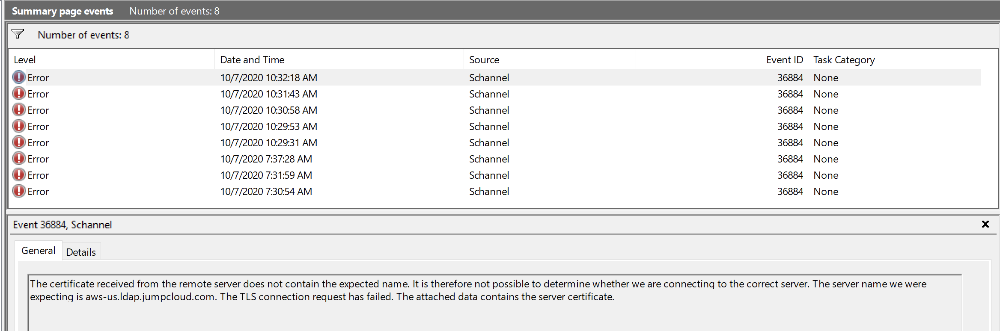 When the test is successful you can select attributes.
Fill in the details as shown below and click Apply and Close to go back to the main screen.
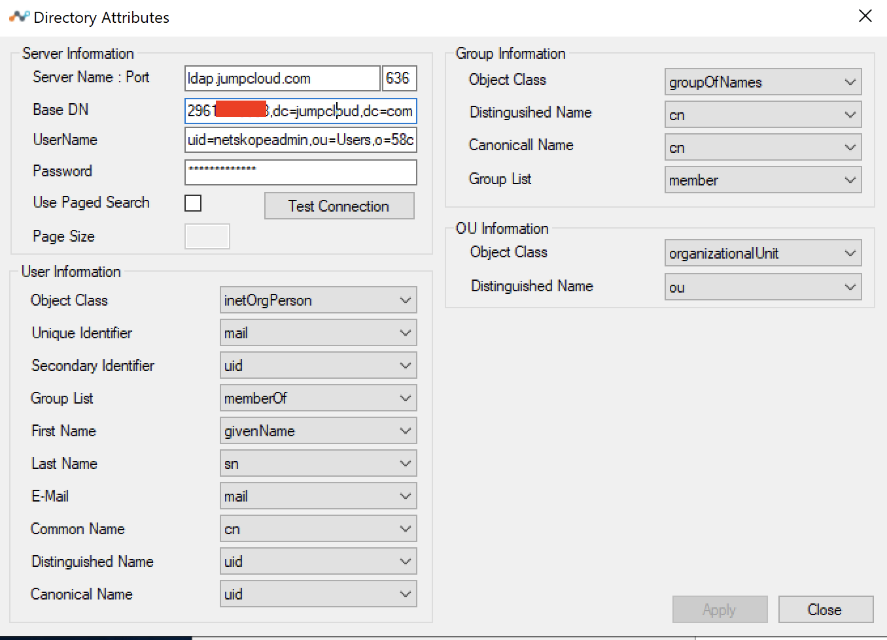 Select Advanced Settings and set Log Level to Debug.

Click Apply and Close.
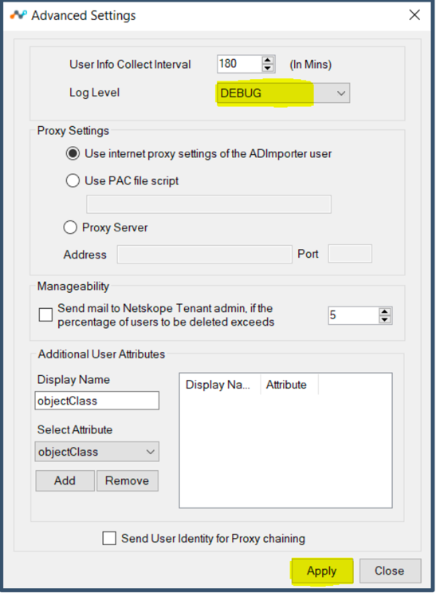 Select Dynamic Groups.
Note
The DN attribute is not available in JumpCloud Identity Schema, which is required by Directory Importer to map users and groups. This method is used to get both users and groups provisioned into the tenant with dynamic group mapping.
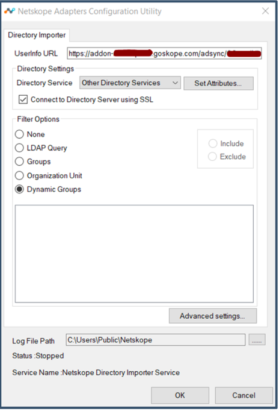 Here's an example shows a custom group which will add all users to a custom group
Dynamic Group Name:
alljumpcloudusers.LDAP Query: (
&(objectClass=inetOrgPerson))Click Test

The test should come back valid.

Click Add

The query gets added to the list
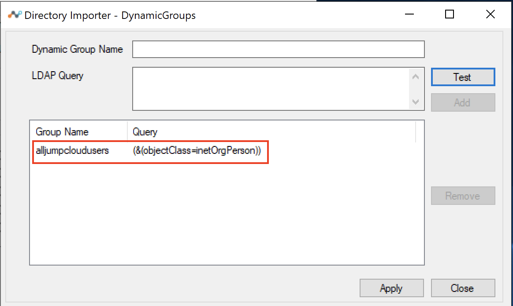 Here's an example of adding a group name that was present in the JumpCloud Directory and map members to the group name.
Dynamic Group Name:
TestLDAPLDAP Query:
(&(objectClass=inetOrgPerson)(memberOf=cn=TestLDAP,ou=Users,o=<JumpCloud Organization ID>,dc=jumpcloud,dc=com))Click Test
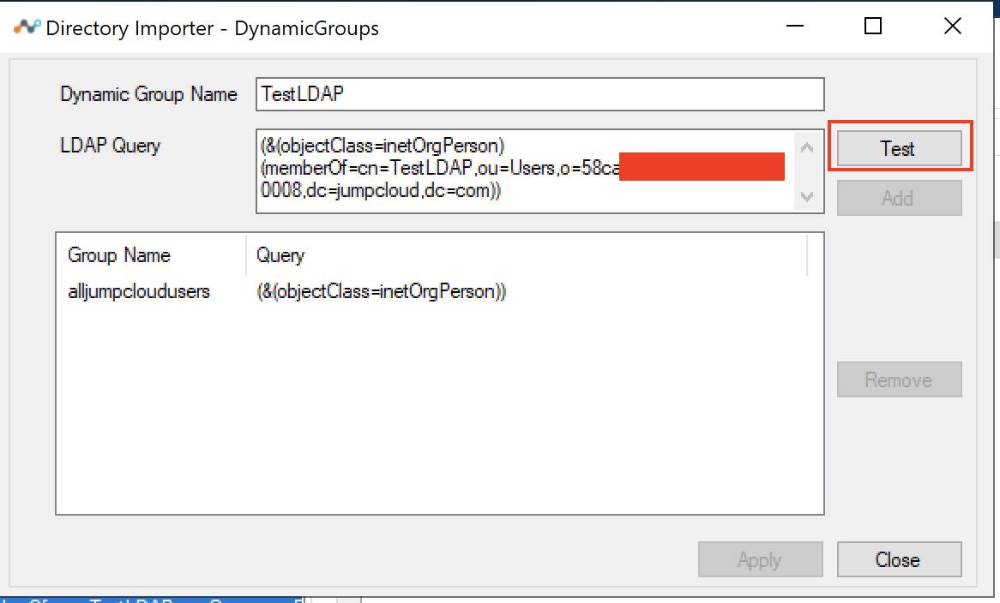 Note
Repeat this step for all the Groups you want to import to Netskope.
Click Add.

Click Apply and Close.
Click OK.
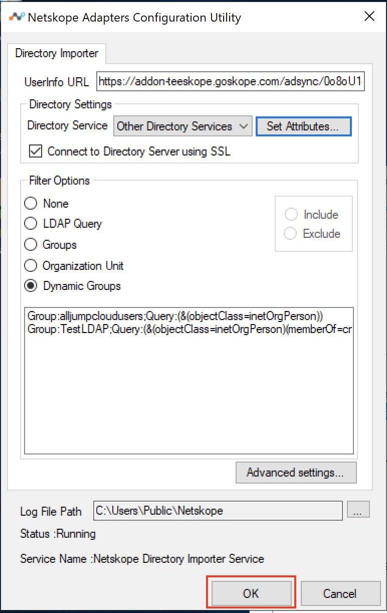 Edit the NSADImporterConfig.json file located under
C:\Program Files\Netskope\NSAdapters\ADImporter.
Ensure the attributes highlighted in blue below match your config. Also, make a copy of the config before making any changes.

Launch
Services.mscconsole and restart the Netskope Directory Importer Service.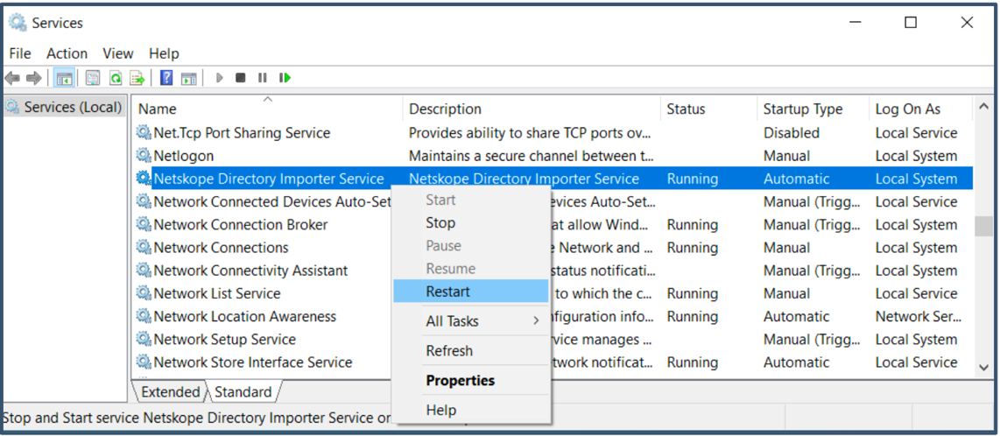 Open the log file at
C:\Users\Public\Netskope\nsADImporterLog.log.You can view details of users and groups being fetched and provisioned into the tenant

Log into the Netskope tenant

Go to Settings > Security Cloud Platform > Users.
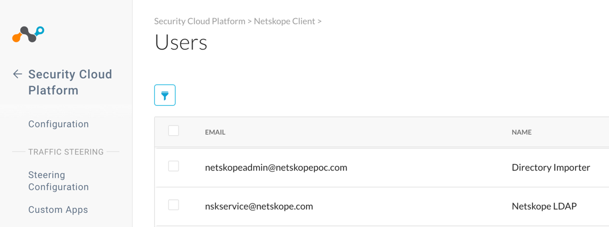 When you select the users, the group memberships are shown.
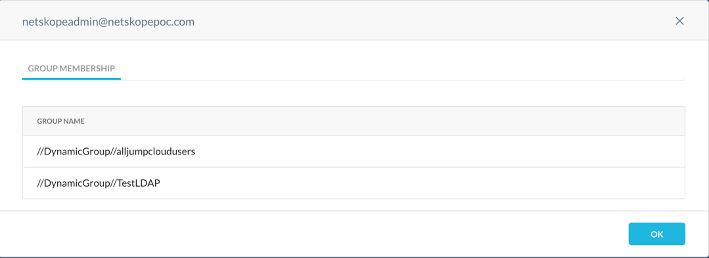 Go to Settings > Security Cloud Platform > Groups.
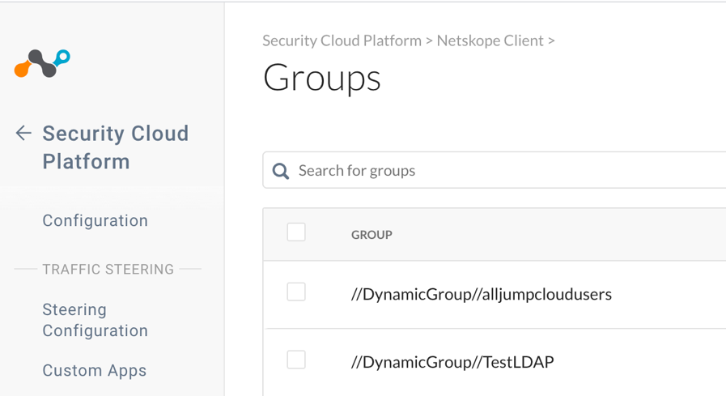 When you select the groups, the members are shown.

The users and groups will now be available in the Real-time Protection policy.